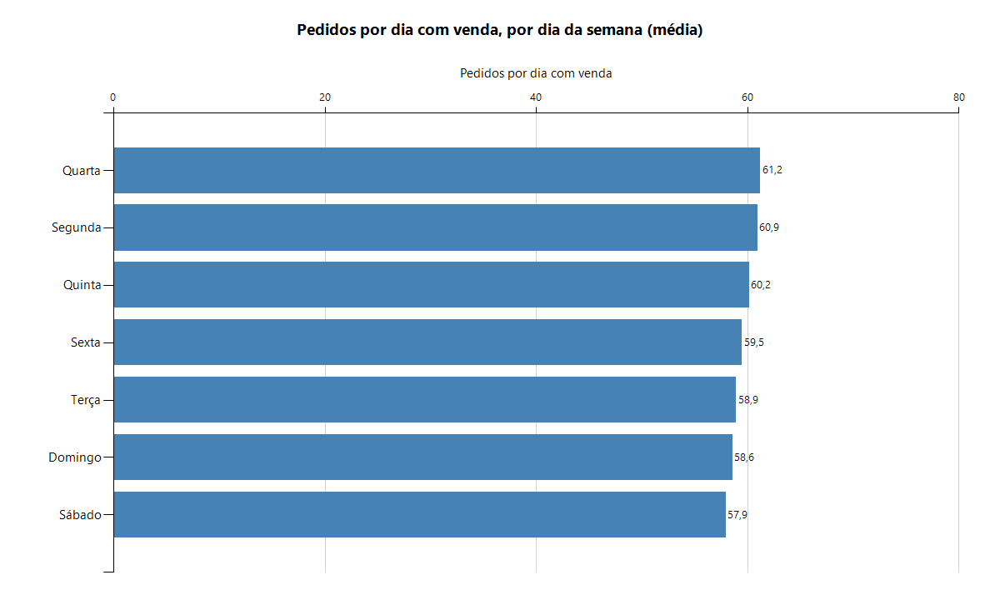
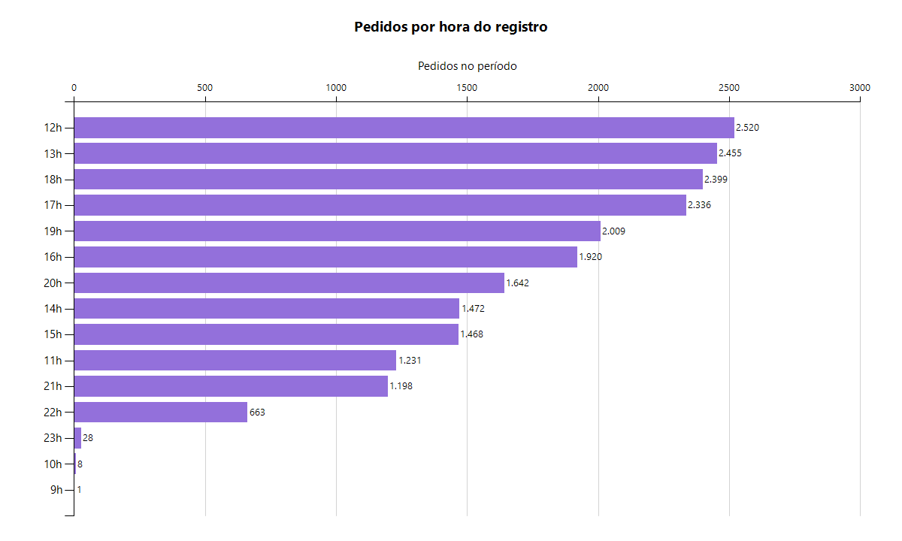
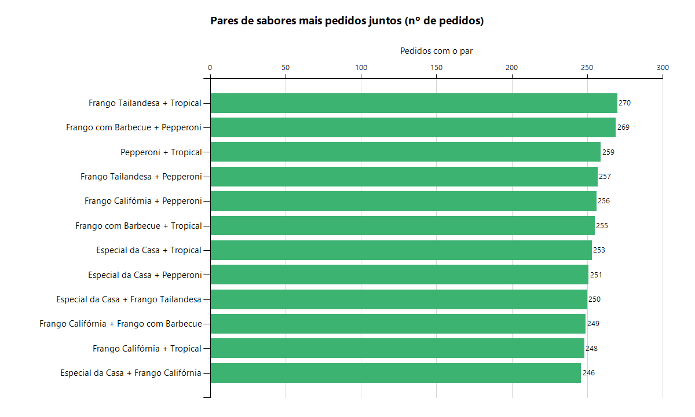

Pizzaria do VittoCardápio, Preço e Demanda em 19 Meses de Vendas
- 01 Os 5 Achados Centrais que Mudam Decisão
- 02 As 5 Ações Prioritárias Recomendadas (Impacto vs Esforço)
- 03 Aprofundamento Analítico dos Achados A1 a A7
- 04 Decomposição de Preço, Volume e Cobertura
- 05 Limites Metodológicos e Próximos Passos
01 · Os 5 Achados Centrais que Mudam Decisão
Síntese executiva dos principais padrões revelados pelo tratamento e mineração dos dados históricos.
1 · Cardápio equilibrado e espalhado (sem cauda descartável)
O cardápio conta com 32 sabores ativos e o sabor líder (Frango Tailandesa) responde por apenas 5,3% da receita. Até mesmo o sabor menos vendido (The Brie Carre) acumula 480 pedidos no período. Conclusão: não existe candidato a corte imediato exclusivamente por baixo volume.
2 · O tamanho Grande (G) sustenta a receita do negócio
A progressão de preços é rígida e constante: cada salto de tamanho (P → M → G) adiciona exatamente R$ 21,25 à pizza. Converter um cliente de M para G agrega mais receita líquida do que vender um adicional de baixo valor.
3 · Demanda semanal plana; forte concentração horária
Entre o dia de menor média (sábado, com 57,9 pedidos/dia) e o de maior média (quarta, com 61,2 pedidos/dia), a variação é de apenas 5,7%, o que representa flutuação puramente aleatória. O verdadeiro gargalo operacional é a hora de atendimento, não o dia da semana.
4 · Preço de tabela congelado por 19 meses consecutivos
Não houve qualquer reajuste tarifário durante todo o período coberto pela base, gerando defasagem inflacionária real e perda gradual de margem operacional.
5 · A queda de faturamento em 2026 decorre de cobertura de registros
Embora a receita bruta acumulada em 2026 tenha caído 6,7%, o número de dias com venda registrados caiu 6,0%. A demanda média diária permanece estável: o negócio sofre de falha de cobertura de dados na planilha, não de perda real de clientes.
02 · As 5 Ações Prioritárias Recomendadas
Proposições práticas estruturadas por impacto financeiro estimado, esforço de implementação e nível de risco.
| Ação Proposta | Impacto Estimado (Receita Bruta) | Esforço | Risco |
|---|---|---|---|
| 1. Reajuste de 2% a 3% nos tamanhos G e GG | +R$ 2,0 mil a R$ 3,1 mil/mês | Baixo | Médio (testar por 30 dias) |
| 2. Treinamento de Upsell: Upgrade M → G | +R$ 1,2 mil a R$ 2,5 mil/mês | Baixo | Baixo (benefício imediato) |
| 3. Criação de Combo com 2 Sabores Mais Pedidos | +R$ 2,8 mil a R$ 4,6 mil/mês | Médio | Médio (monitorar canibalização) |
| 4. Redimensionamento de Equipe e Forno nos Picos | Protege 62,5% da receita (R$ 134 mil/mês) | Médio | Baixo (evita perda de fila) |
| 5. Auditoria e Padronização do Registro de Dias | Elimina cegueira gerencial dos 222 dias ausentes | Baixo | Nulo |
03 · Diagnóstico Aprofundado (A1 a A7)
A1 · Mix de Produtos e Curva ABC de Sabores
O produto líder em unidades vendidas (Especial da Casa, com 2.453 pizzas) é apenas o 4º colocado em faturamento total, enquanto a pizza Tropical é a 3ª em volume e a 8ª em receita. Isso ocorre porque pizzas com ingredientes premium concentram-se no tamanho G, gerando maior tíquete por unidade.

A2 · O Salto de Preço de R$ 21,25 entre Tamanhos
A análise de 18.526 itens do tamanho G demonstra sua dominância. O degrau mediano é consistente em 25 sabores com mais de 100 itens comercializados nos três tamanhos principais.

A3 · Padrão de Demanda Horária e Semanal
A análise de variância da demanda diária não revela dias fracos ou fortes estatisticamente significativos. Em contrapartida, as janelas das 11h–13h (almoço) e 17h–19h (início do jantar) concentram o fluxo de pedidos.


A4 · Evolução Mensal e Estabilidade do Tíquete
A série mensal ilustra que os preços unitários médios flutuam em torno de R$ 82,45 sem tendência de alta, enquanto o volume total mensal reflete diretamente o número de dias cadastrados em cada mês.

A5 · Coocorrência de Sabores no Mesmo Pedido
61,0% dos 21.350 pedidos contêm dois ou mais sabores. Entretanto, o lift médio entre pares de sabores é de apenas 1,09x (próximo de 1,0x, indicando independência estocástica). Isso comprova que clientes não buscam uma "dupla mágica", mas sim escolhem sabores por preferência individual.

A6 · Distribuição do Tíquete Médio por Pedido
A mediana do pedido é de R$ 162,50 e a média é de R$ 191,54. A cauda longa (15,7% dos pedidos superam R$ 300,00 e o maior pedido registrado alcançou R$ 2.221,00) puxa a média para cima, recomendando o uso da mediana para planejamento diário.

04 · Limitações do Estudo e Recomendações Metodológicas
Fronteiras do Estudo:
- Ausência de Custos: A base primária registra apenas preço de venda, inviabilizando cálculo de margem de contribuição real e ponto de equilíbrio por sabor.
- Ausência de Identificador de Cliente: Não é possível calcular métricas de retenção (LTV, Churn, Recompra).
- Ausência de Canal de Venda: Não se distingue pedidos de balcão, salão, telefone ou aplicativos de entrega terceirizados.
- Lacunas Temporais (222 dias sem dados): Recomenda-se saneamento urgente do software de PDV da pizzaria para garantir registro contínuo.
Nota Acadêmica de Defesa: O presente relatório foi elaborado com base nos princípios de Ciência de Dados aplicada à Administração, adotando intervalos de confiança de 95%, estatísticas não-paramétricas (medianas e quartis) e decomposição estrutural de séries temporais. Todo o código analítico e scripts de reprodução encontram-se versionados no repositório oficial do projeto.